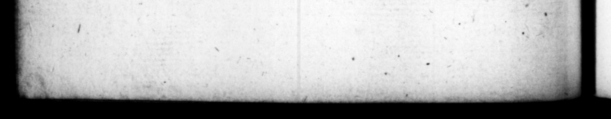

< * av" 1405008T. NI Ne 18710 bens rer * 9789 „ Ro- — SY, 8. N Upon bis J opta- 72 4 cut h the vit, | diſfionulats' feriacus men- — be w ti a Trax te amidſt ; bone. - Paſs concourſe of le, wi | - buſineſs might fortupate 21 rn os ._ all, bout taking an notice of the ſenate at = . Sed Dag) aut mes 389, But 8 „e n wk viſa yr Ark W Dicen- the People, no” the ei WIR. 1 ſermone com- * 5 * comverſat nn Pup. enen Me luxe e 1 25 i we ken 4g, i the ae the Word. © wn.” 5 | its £ GTO ' Nay, ſai let it be aun Ian br = 43 : © Fl, Of quaſi 228 441 ated accord 3 ; for nſi N Si n . l 42 te eke rffence. at f old 74 76 7 with 14 exuriſque . 2 l fas and winding of the 1 he urbem tam palam, ut the ary on fire in ſe bare, por 4 by manner that great man fique conſulares, cubicularios Bf, 92 7 toſs " gentlemen, .. is Cat e 00 amber with tow, and 2 Attigerint: ö 3 in their own houſes, Circa ; mm. Au Aur , y not mea date, 24 m. Ana 2 a | narie: nigh s golden houſe, t rom lar plot of We very much = 4 ta labefactala, bellicis e. come at, were battered woy E and f lint, quod {a a uro con- Fo of Pere ;on fre, 21 th "x 255 wert „ an _ Uta, SF PIA. 22011 was . „ e C: ptemque a — clade ſavitym el, montmentorum de by, 72 the tomb: 5 bog boftorumque diverloria plebe went: fur ods ud fal. ft that compuiſa, Tunc prater imbe Baer * tous number of ſi | e ea Irons Foy Seine th 2 Tae, oſtilibus adhuc ſpo- 7008 had been of old mes of f renown, then finely beautify'd with. the His. adornare, deerumque ſpal s of rfl all U od 772 es ab retzibus, ac deinde 4, 294005 the temples of the God, that » Fan 5 as Calle 2 bellis vo. pa been vomed and dedicated by the te decicatzques & guidquid Ji, of Rowe, and fte ed in the viſendum atque memorabile i ibs the Carthaginians, and & antiquit ate dnraverar, Hoc Gauls; and in ſbort, every thing ipcendium & curri Macena- antiquity, that was remarkable Lana, proſpectans , lI=cuſque Bib ſeeing. This fire he beheld from mme, ut aje lat, pulcritudine, tower on the top of Metenas's hehe wA&r'v Iii in ilio ſuo ſoeni- and being hugely wad 41 be habitu Gecantavir, Ac n2 ſar, witch the 2 non hinc quoque quantum 5 Jung the ditty of let præde dc manubiarum 12553 in the aveſs 1 9 paring: upon 2 + ng cadave. the ftage. Aud to make his — rum & ruderum gratuitam * thi⸗ 5 in the 77 nem, nemin. al reli- and ratine, he tromiſed #0 1
